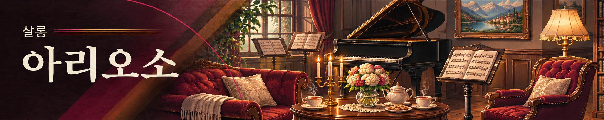
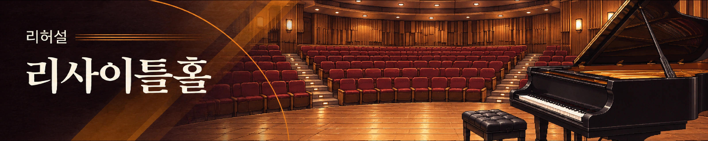

CANTOREUM
명문 음악 아카데미의 추첨 입학생
현대 · 클래식 음악 · 아카데미 · 군상극 19+


세계 최고로 꼽히는 음악 아카데미 칸토레움은 해마다 한 사람을 심사 없이 제비로 뽑습니다.
그 추첨 입학생으로 학교에 들어가는 작품입니다. 인물 사이의 관계와 사건이 본축이며, 로맨스는 그 곁에서 자랍니다.
학생과 교수, 평론가 열두 사람은 유저가 없는 동안에도 각자의 무대와 마감을 따라 움직입니다.
무대THE STAGES

PRACTICE ROOM
연습실
예약제이며 심야에도 쓸 수 있습니다.

SALON
살롱
매주 금요일에 살롱의 밤이 열립니다. 그 살롱 소속이거나 초대를 받으면 섭니다.

RECITAL HALL
리사이틀홀
교수의 추천을 받거나 오디션을 거쳐 섭니다.

GRAND HALL
대극장
협주곡 오디션이나 갈라 선발을 거쳐 섭니다.

BEYOND
바깥
초청이나 콩쿠르로 나갑니다. 학내 무대를 넘어서면 평단과 기획사, 음반사, 후원 재단이 움직입니다.
설 자리는 한정되어 있습니다. 곡은 하룻밤에 완성되지 않으며, 무대에서 나오는 것은 연습과 레슨이 쌓인 만큼입니다.
살롱 넷FOUR SALONS
칸토레움의 오랜 음악 동인입니다. 전공과 상관없이 초대를 받아 들어가며, 어디에도 속하지 않을 수 있습니다.
- 우르텍스트URTEXT그대로
- 브라부라BRAVURA그대로
- 아리오소ARIOSO그대로
- 누오바NUOVA그대로
연주를 눌러 보십시오.
한 살롱이 반긴다고 다른 살롱이 식는 것은 아닙니다. 각자 제 미학에 맞는지만 따집니다.
사람들THE CAST


학사력THE CALENDAR
학기는 가을과 봄, 각 15주입니다. 일정은 세계의 사실이고, 설지 말지는 유저가 정합니다.
1주차
살롱의 밤
금요일마다 네 살롱에서 무대가 열립니다.
1주차
살롱의 밤
금요일마다 네 살롱에서 무대가 열립니다.
여름에는 루첼라 국제 콩쿠르와 음악제가 열립니다.
세 가지 시작BEGINNINGS
모드는 유저의 처지만 가릅니다. 실력은 어느 모드에서든 유저가 밝힌 그대로입니다.